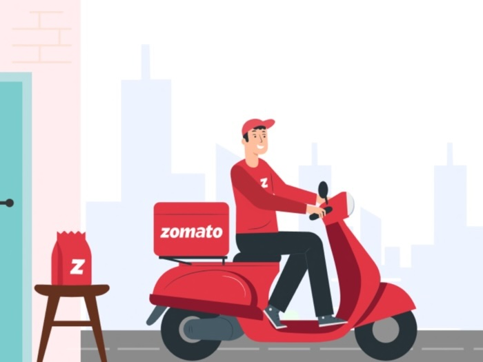

In the fast-paced retail industry, efficient inventory and supplier management can make the difference between profit and loss. This project dives deep into supplier performance, sales trends, and inventory dynamics to uncover actionable insights that drive smarter business decisions. By leveraging SQL for data extraction, Python for advanced analytics, and Tableau for interactive dashboards, the project identifies high-performing suppliers, highlights cost-saving opportunities through bulk purchasing, detects slow-moving inventory, and recommends strategies to optimize profitability.
The result is a data-driven roadmap for retail teams to reduce risk, maximize supplier efficiency, and enhance overall business growth — all presented through a visually intuitive and interactive dashboard.
Turning hotel booking chaos into actionable insights. This project dives deep into cancellation trends, pricing patterns, and seasonal behaviors across City and Resort Hotels, uncovering strategies to boost occupancy, optimize revenue, and transform data into smarter business decisions.
Leveraging data science to uncover the underlying causes of employee turnover, this project applies predictive modeling and exploratory analysis to identify key factors influencing retention. Through comprehensive data preprocessing, feature engineering, and visualization, it provides actionable insights to help organizations enhance employee satisfaction and reduce attrition rates

Decoding Zomato’s sales patterns through data-driven insights—transforming raw transaction data into actionable strategies, uncovering trends, customer behaviors, and payment dynamics that drive smarter business decisions.
A dynamic Tableau dashboard that transforms raw sales data into actionable insights. By visualizing key metrics such as revenue, order volume, and customer behavior, this interactive dashboard empowers business teams to make informed decisions and drive growth.
An interactive Tableau dashboard that transforms raw episode data from the iconic TV series Breaking Bad into compelling visual narratives. This project delves into viewership trends, episode ratings, character appearances, and more, offering fans and analysts a data-driven exploration of the series.
A comprehensive product design case study developed for the Nubra Product Intern role, focusing on enhancing the algorithmic trading experience. This project addresses key friction points in onboarding, strategy building, and the transition from manual to automated trading, combining product strategy, UI/UX design, and technical feasibility.